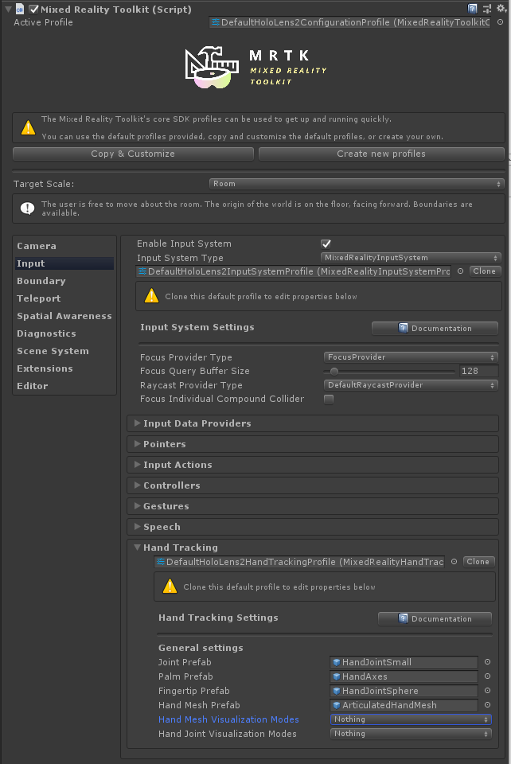

ハンド トラッキング
Hand Tracking Profile (ハンド トラッキング プロファイル)
Hand Tracking profile は Input System profile 配下にあります。これは、手の表示をカスタマイズするための設定を含んでいます。
Joint Prefabs (ジョイント プレハブ)
ジョイント プレハブはシンプルなプレハブを使って可視化されます。Palm と Index Finger は特別重要で独自のプレハブを持っていますが、他のジョイントは同じプレハブを共有しています。
デフォルトでは、ハンド ジョイントのプレハブは、シンプルな幾何プリミティブです。必要であれば、これらを置き換えることができます。もしプレハブが指定されなければ、空の GameObjects が代わりに作成されます。
Warning
ジョイント プレハブに複雑なスクリプトやレンダリングコストの高いものを使うことは避けてください。なぜなら、ジョイント オブジェクトは毎フレーム移動し、かなりのパフォーマンス コストがかかるためです！

Hand Mesh Prefab (ハンド メッシュ プレハブ)
ハンド メッシュはハンド トラッキング デバイスから完全に定義されたメッシュ データが提供された場合に使われます。プレハブ内のレンダーできるメッシュはデバイスからのデータで置き換えられるので、立方体などのダミーのメッシュで十分です。プレハブのマテリアルは、ハンド メッシュに使われます。

ハンド メッシュの表示は、パフォーマンスに顕著な影響を与える場合があります。そのため、Enable Hand Mesh Visualization オプションをアンチェックすることで完全に無効にすることができます。
ハンドの可視化設定
ハンド メッシュとハンド ジョイントの可視化は、それぞれ Hand Mesh Visualization Modes と Hand Joint Visualization Modes の設定で消したり付けたりすることができます。 これらの設定はアプリケーションモード固有です。 つまり、エディターではいくつかの機能を有効にし (例えば、エディターでのシミュレーションではジョイントを見る)、デバイスにデプロイする際 (プレイヤー ビルドでは) 同じ機能を無効にすることが可能です。
エディターではハンド ジョイントの可視化をオンに (エディター内シミュレーションでハンドのジョイントがどこか見えるように)、プレイヤーではハンド ジョイントの可視化とハンド メッシュの可視化をオフに (パフォーマンスへの影響があるため) することが一般的に推奨されることにご注意ください。
スクリプト
ハンド ジョイントそれぞれの位置と姿勢は MixedRealityPose として、入力システムから要求することができます。
別の方法として、入力システムはジョイントに追従する GameObjects へのアクセスを許可しています。これは、別の GameObject が連続的にジョイントを追跡すべき場合には有用です。
利用可能なジョイントは TrackedHandJoint 列挙型で一覧にされています。
Note
ジョイント オブジェクトは、ハンド トラッキングがロストした時に破棄されます! ジョイントオブジェクトを使うすべてのスクリプトは、エラーを避けるために null の場合を処理してください。
所定のハンド コントローラーへのアクセス
特定のハンド コントローラーは時々 (例えば、入力イベントを扱う際に) 利用可能です。この場合、ジョイント データは IMixedRealityHand インターフェイスを使ってデバイスに直接リクエストすることができます。
コントローラーからジョイント ポーズを取り出す
TryGetJoint 関数は、リクエストされたジョイントが何らかの理由で利用できない場合に false を返します。この場合、結果のポーズは MixedRealityPose.ZeroIdentity となります。
public void OnSourceDetected(SourceStateEventData eventData)
{
var hand = eventData.Controller as IMixedRealityHand;
if (hand != null)
{
if (hand.TryGetJoint(TrackedHandJoint.IndexTip, out MixedRealityPose jointPose)
{
// ...
}
}
}
Hand Visualizer (ハンド ビジュアライザー) からの Joint Transform (ジョイント トランスフォーム)
ジョイント オブジェクトは コントローラー ビジュアライザー からリクエストすることができます。
public void OnSourceDetected(SourceStateEventData eventData)
{
var handVisualizer = eventData.Controller.Visualizer as IMixedRealityHandVisualizer;
if (handVisualizer != null)
{
if (handVisualizer.TryGetJointTransform(TrackedHandJoint.IndexTip, out Transform jointTransform)
{
// ...
}
}
}
シンプルなジョイント データへのアクセス
特定のコントローラーが与えられていない場合に、ハンド ジョイント データに便利にアクセスするためのユーティリティ クラスが提供されています。これらの関数は、現在トラッキングされている最初に利用可能なハンド デバイスのジョイント データをリクエストします。
HandJointUtils からジョイント ポーズを取り出す
HandJointUtils は最初にアクティブなハンド デバイスを問い合わせる静的クラスです。
if (HandJointUtils.TryGetJointPose(TrackedHandJoint.IndexTip, Handedness.Right, out MixedRealityPose pose))
{
// ...
}
Hand Joint Service (ハンド ジョイント サービス) からの Joint Transform (ジョイント トランスフォーム)
IMixedRealityHandJointService は、トラッキングしているジョイントの GameObject の永続的なセットを保持します。
var handJointService = MixedRealityToolkit.Instance.GetService<IMixedRealityHandJointService>();
if (handJointService != null)
{
Transform jointTransform = handJointService.RequestJointTransform(TrackedHandJoint.IndexTip, Handedness.Right);
// ...
}
}
ハンド トラッキング イベント
コントローラーから直接データを抜き出すのが望ましくない場合のために、入力システムはイベントも提供しています。
ジョイント イベント
IMixedRealityHandJointHandler はジョイントの位置の更新を扱います。
public class MyHandJointEventHandler : IMixedRealityHandJointHandler
{
public Handedness myHandedness;
void IMixedRealityHandJointHandler.OnHandJointsUpdated(InputEventData<IDictionary<TrackedHandJoint, MixedRealityPose>> eventData)
{
if (eventData.Handedness == myHandedness)
{
if (eventData.InputData.TryGetValue(TrackedHandJoint.IndexTip, out MixedRealityPose pose))
{
// ...
}
}
}
}
メッシュ イベント
IMixedRealityHandMeshHandler は、多関節ハンド メッシュの変更を扱います。
ハンド メッシュはデフォルトでは有効でないことにご注意ください。
public class MyHandMeshEventHandler : IMixedRealityHandMeshHandler
{
public Handedness myHandedness;
public Mesh myMesh;
public void OnHandMeshUpdated(InputEventData<HandMeshInfo> eventData)
{
if (eventData.Handedness == myHandedness)
{
myMesh.vertices = eventData.InputData.vertices;
myMesh.normals = eventData.InputData.normals;
myMesh.triangles = eventData.InputData.triangles;
if (eventData.InputData.uvs != null && eventData.InputData.uvs.Length > 0)
{
myMesh.uv = eventData.InputData.uvs;
}
// ...
}
}
}
既知の問題
.NET Native
現在、.NET バックエンドを使った Master ビルドには既知の問題があります。.NET Native ではMarshal.GetObjectForIUnknown を使って IInspectable ポインターをネイティブからマネージド コードにマーシャルすることができません。MRTK は、プラットフォームから手と目のデータを受け取るために、SpatialCoordinateSystem を取得するためにこれを使っています。
この問題へのワークアラウンドとして、ネイティブ Mixed Reality Toolkit リポジトリ にて DLL のソースを提供しています。README の指示に従い、結果のバイナリを Unity アセットの Plugins フォルダーにコピーしてください。そうすると、MRTK で提供されている WindowsMixedRealityUtilities スクリプトで、ワークアラウンドが適用されます。
独自の DLL を作りたい場合や既存の DLL にこのワークアラウンドを含めたい場合は、ワークアラウンドのコアは以下です。
extern "C" __declspec(dllexport) void __stdcall MarshalIInspectable(IUnknown* nativePtr, IUnknown** inspectable)
{
*inspectable = nativePtr;
}
そして、C# Unity コードでの使い方は以下です。
[DllImport("DotNetNativeWorkaround.dll", EntryPoint = "MarshalIInspectable")]
private static extern void GetSpatialCoordinateSystem(IntPtr nativePtr, out SpatialCoordinateSystem coordinateSystem);
private static SpatialCoordinateSystem GetSpatialCoordinateSystem(IntPtr nativePtr)
{
try
{
GetSpatialCoordinateSystem(nativePtr, out SpatialCoordinateSystem coordinateSystem);
return coordinateSystem;
}
catch
{
UnityEngine.Debug.LogError("Call to the DotNetNativeWorkaround plug-in failed. The plug-in is required for correct behavior when using .NET Native compilation");
return Marshal.GetObjectForIUnknown(nativePtr) as SpatialCoordinateSystem;
}
}